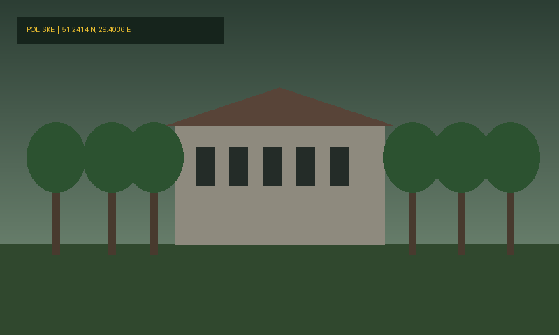
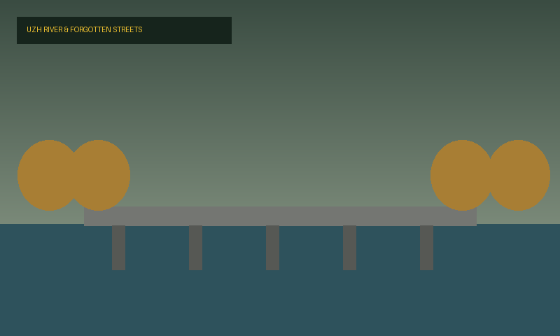

Визначні пам'ятки та архітектура 🏛️
Серед найцікавіших об'єктів Поліського — будівля районного вузла зв'язку, стара школа, зруйновані торгові ряди та міст через річку Уж, з якого видно зарослі заплави.

Кухня та гастрономічні спогади 🍲
Поліський край завжди славився грибними юшками, картопляними дерунами в глиняних горщиках та узваром із сушених груш. Навіть у розповідях колишніх мешканців саме домашня поліська кухня згадується з найбільшим теплом.
Культура та історія краю 📖
Історія Поліського (до 1957 року — Кагановичі Перші, а ще раніше — Хабне) налічує кілька століть. Тут перепліталися українські, польські та єврейські культурні традиції, працювали ремісничі майстерні та ткацькі артілі.

Особисті враження та віртуальний маршрут 🗺️
Поліське вражає своєю камерністю та затишком навіть у стані занепаду. Тут немає гігантських панельних масивів — лише одноповерхові й двоповерхові будиночки, які тихо зберігають пам'ять про покоління поліщуків.